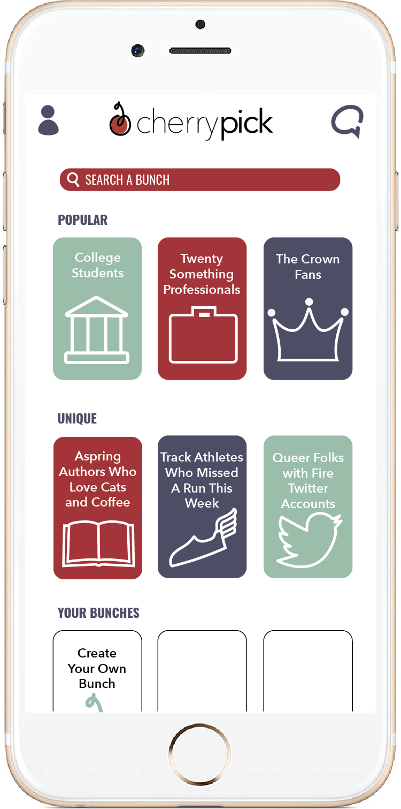

II. Explore Bunches
With my profile complete, all I needed to do was decide what I was looking for. CherryPick was originally a byproduct of the shortcomings of other dating apps. People who used apps like Tinder and Bumble wanted to be able to customize who they were seeing beyond just age and gender. One tweet embodied, granted as a joke, what people wanted to see.
The creators of CherryPick thought that if that was exactly what you wanted, why the hell shouldn’t you be able to find it? But it wouldn’t stop at 7.5. Anyone who wanted to explore any unique subset of people could join a “bunch” and swipe through its members.
CherryPick’s home screen showed some of the most popular bunches at the moment: 20 something professionals, “The Crown” fans, college students. Farther down, you could find the most unique bunches: aspiring authors who love cats and never leave their local coffee shop, track athletes who missed their run today, people who have cried in math class, queer folks with a fire Twitter account. Obviously, the stranger your bunch, the fewer people you would find. It was a gamble you had to be willing to take. On top of that, there wasn’t a verification process for joining a bunch, so even though you were looking through college students, that was never guaranteed. You could join as many bunches as you wanted or just cater your account to one.
And, of course, you always had the option of creating your own bunch if you didn’t see something you liked. It could be tricky to get it noticed, especially if it wasn’t home-screen-worthy. Beyond that, CherryPick was just like every other swipe-based dating app.
With my profile done and nothing left to do but join a bunch, I scanned through my options. There were a lot of intriguing ones, like college students that would never join Greek life and can’t play sports, eternal optimists, and even people that consider themselves almost fashionable, but one completely stopped me in my tracks. Theatre kids.
I stared it at it for just a little too long. I simultaneously wanted to join and wanted to scroll past it as fast as possible. There was no denying that I was a theatre kid. Six years of behind-the-scenes work and a love of musicals and plays backed that up. I wasn’t even against dating other theatre kids. I had my fair share of crushes on actors and techies, and being with someone who understood why I was in Breiner Hall until midnight; who got that a perfect night for me was rewriting the cues in the margins of my script; who recognized that when I complained about our stickler theater coordinator, it came from a place of love...that all sounded amazing.
The issue was that I had been there before, and I swore I would never do it again.
Technically, I swore that I would never be with someone like him again. He Who Shall Not Be Named, the dark spot in my past. It had been over a year since I promised myself I would avoid guys like him at all costs, and that promise became less and less clear as time went on. What exactly about him made him horrible? Definitely that he hid our relationship from his family, and probably that he agreed to occasionally help his drug dealer friends make deliveries, and also there was that time he told me to check in with him next time before getting a haircut. Those things were obvious now, but how would I know a guy was going to be like that until I dated him for nine months and only broke up with him because he attempted to cheat on me? What if the root of this evil was his attractive confidence, or that he didn’t really care for school, or even that he was a theatre kid? I spent months avoiding all of those things out of fear that one of them would turn out to be the key to being an awful boyfriend.
I knew it all sounded illogical. He was the one that was bad, not the categories he fit into. I had already spent so much time avoiding dating because of him, and I wasn’t about to let him stop me again. I turned back to the bunch I was considering with new vigor. I knew tons of theatre kids who were great people and totally dateable. Without letting myself overthink it anymore, I joined the theatre kids bunch.
“CherryPick exactly what you want!” was the message on my loading screen. As I waited for my matches to load, I hoped it was right.
Next: Find Matches